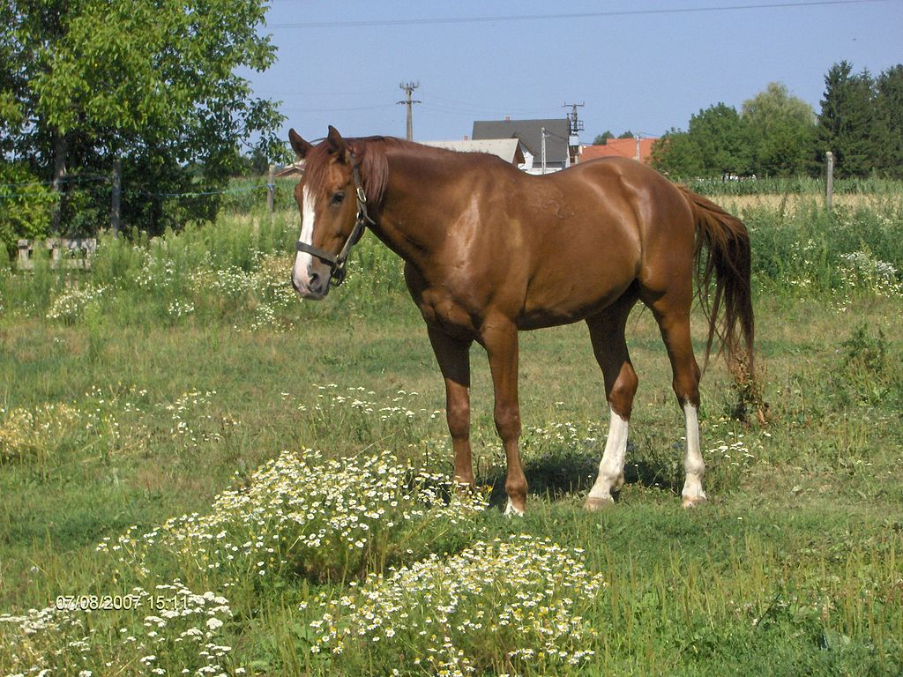

Melegvérű, szilárd szervezetű. Erős csontozatú, középnehéz fajta. A mének bottal mért marmagassága 160–168 cm, a kancáké 155–167 cm. Színe kizárólag sárga lehet, több-kevesebb fehér jeggyel. Könnyű, elegáns kocsilóként is használható. Feje az anglo-arabokra jellemzően nemes, szikár, inkább egyenes profilvonalú. Nyaka középmagasan illesztett, hosszú, jól ívelt, esetleg középhosszú. Marja hosszú, magas kifejezett baltavágással. Többnyire jól izmolt. Az angol telivér kedvező maralakulása kifejezésre jut. Háta, ágyéka középhosszú, feszes, széles, jól izmolt. Az angol telivér génhányadtól függően a mellkas többé vagy kevésbé mély, de mindig terjedelmes. A lapockája dőlt, jól izmolt, terjedelmes, elég hosszú.
A hucul mindössze 131–145 cm marmagasságú. Színe legtöbbször sötétpej vagy pej továbbá fakó vagy egérfakó, de akad teljesen fekete egyed is. Feje nagy, de nem aránytalan. Egész testalkata zömök benyomást kelt a széles háttal és szüggyel, a dongás mellkassal. Fő ismertetőjegye a hátán végighúzódó hátszíj. Végtagjai rövidek, izmosak. Patái kemények, legtöbbször nem is patkolják. A hucul rendkívüli tulajdonságait elsősorban a hegyvidékeken értékelték nagyra. Tökéletesen alkalmazkodott a hegyi körülményekhez, a zord időjáráshoz, a szegényes táplálékhoz, munkakészsége kiemelkedő, és a rögös hegyi utakon is biztos a lépte.
A kisbéri félvér lovak a lovassport valamennyi ágában eredményesen használhatók. Az angol telivérhez igen hasonló, elegáns megjelenésű, szilárd szervezetű hátasló, amely könnyebb hámos munkára is alkalmas. A kancák marmagassága bottal 163-179 cm. Leggyakoribb színe a sárga és a pej, de előfordul szürkében és feketében is.